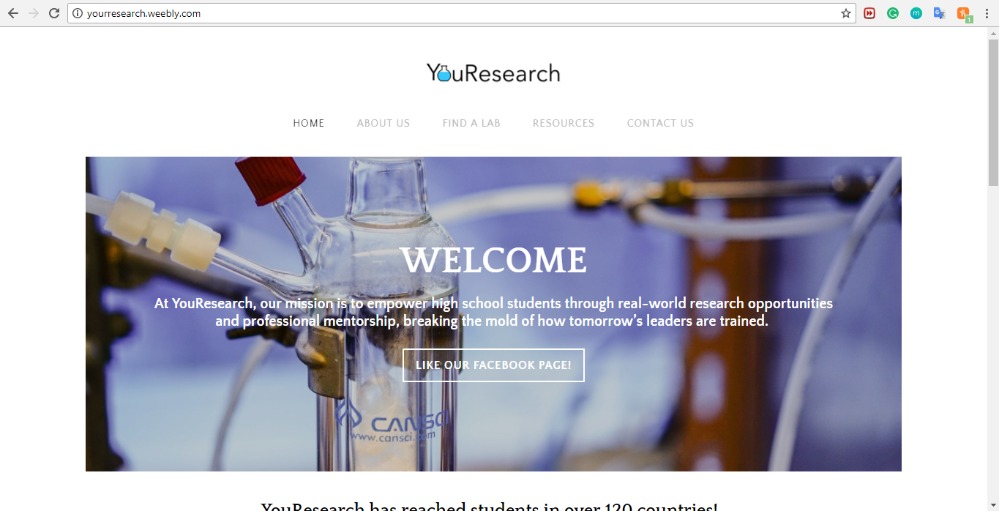
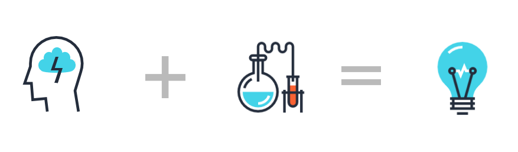

Representation
At YouResearch, our mission is to empower high school students through professional mentorship and real-world research opportunities, breaking the mold of how tomorrow’s leaders are trained. We do this through one-on-one personalized assistance from experienced student researchers; local laboratory placement and direct mentorship as a part of our Scholars Program; and information and various resources about research programs and competitions, important happenings in academia and industry, and relevant experiences amongst its team members. This rebranding was essential for Youresearch to be taken seriously as it grew as an organization.
Original Design

The old website was made using Weebly. Each page had the same hero image, which made navigation a difficulty.
Market Research
I looked at other non-profit organizations for inspiration. Common themes I noticed were:
- Use of graphics
- Minimal animation
With this in mind, I created several graphics for the website:
Final Product

Using Semantic UI as a framework, I exercised my skills in HTML/CSS, with a touch of PHP and Javascript to create the new website. Rebranding an established non-profit was a great way for me to practice web development and branding.